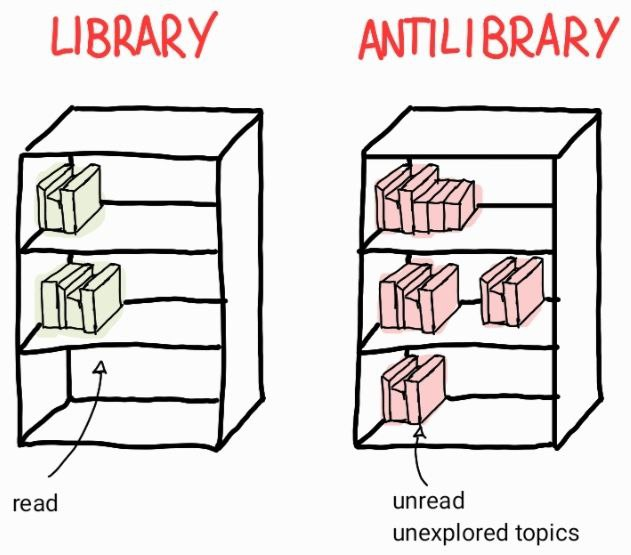

Antilibrary
I learned this concept from Nassim Nicholas Taleb’s book The Black Swan.
I could barely read more than a couple of pages a day because it sparked a large number of questions and reflections. I heartily suggest reading the book before reading my post, it’s tremendously stimulating and provoking and these characteristics represent well the main idea of my blog.
I am deeply in love with the concept of antilibrary; it is not a new concept, indeed I had an antilibrary for years without knowing it, but Taleb expressed flawlessly the power that follows from being conscious of having an antilibrary.

The library contains read books, while an antilibrary contains the book you want to read about the topics you haven’t yet explored.
I find extremely attractive the idea of having an antilibrary. The following are the reasons why I included a new section with my antilibrary on my website: